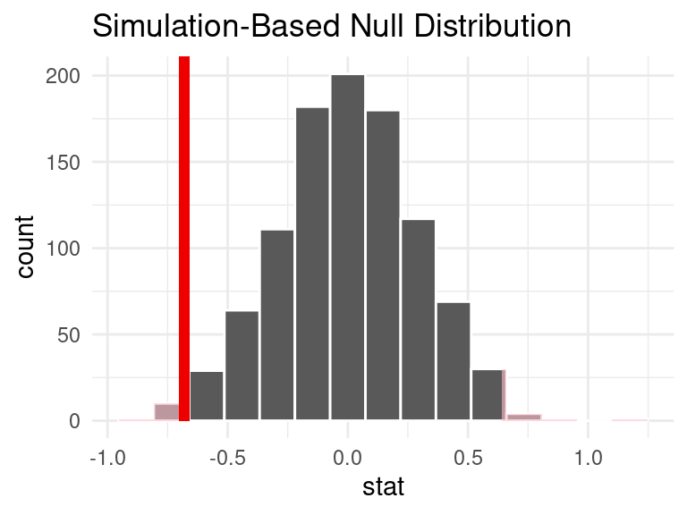

Assessing Top Soccer Player Statistics
Report
Introduction
The motivation behind this project was to determine whether or not there were relationships between soccer players, leagues, and their respective statistics. Each observation represents a player, and columns represent descriptors such as height, weight, nationality, passes, goals scored, assists, penalties, etc. Since soccer is such a popular global sport, we aimed to answer the following research questions in our project:
RQ 1 (Players): What factors influence booking frequency of players? Some factors we considered were player height, weight, age, and player rating.
RQ 2 (Leagues): Does aggressiveness differ between European and non-European leagues? Aggressiveness was indirectly measured through average penalties per game, average goals per minute, average shots per game, and average number of duels per game.
After conducting data analysis, it was discovered that the data does provide convincing evidence that the ratings of players influence the booking frequency, while other variables such as height and age were not statistically significant. In addition, there was convincing evidence that the average number of duels per game differ between European and non-European leagues. However, the data does not provide convincing evidence that the average goals per minute differ between European and non-European leagues, when measuring aggressiveness, and the variable of average shots per game was found to be not statistically significant.
Data description
Motivation
This dataset was created to rank and compare the top-scoring football players across top leagues; with this, the dataset was created by a team of individuals interested in football and the application of the recorded statistics. This dataset is funded through a membership program that allows users of the data to access additional features within the dataset. While people can use the data without a membership, specific advanced tasks may require these additional features. In turn, the data could be helpful for football fans, sports betters, or data scientists.
Composition
In our data set, there are 560 observations and 51 attributes (columns). Of these columns, we have information on player statistics (ex/ number of appearances, number of minutes played, number of yellow or red cards attained) for the top 20 scorers from the top 27 football leagues for the 2021 league season. The people involved are football players, who are aware of data collection, as this occurs during and after all of their games because sports data is typically used to make general comparisons (past/future versions of themselves, comparing their team to another, or between leagues, sports reporting (to football fans), or MVP decisions. In the dataset of soccer player statistics, some instances may have missing information for certain attributes. This is due to the fact that each league may prioritize and record specific statistics that they find important, resulting in variations in the recorded statistics across different leagues. Additionally, some leagues are smaller than others and may not have the same telemetry.
The relationships between the individual instances (players) are made explicit through the tabular structure, where each row corresponds to a specific player, and each column represents their associated statistics. As this is game data, it was likely influenced by referee rulings, as some scores may not have counted in the final game statistics.
Collection Process
The data was first collected by making API calls from https://www.api-football.com/documentation-v3 for various soccer leagues. We made a GET request to their top scorers’ endpoint, supplying parameters for each of the 27 top leagues in 2021. From this, we collected 20 goal scorers for each league as we specified per the query string parameters. From this point, we used the jsonlite library to flatten the JSON API responses into a tibble and then exported the table to a CSV file.
The data used in our analysis were collected throughout the respective football seasons of each league in the year 2021. Although the start date and duration of each league’s season may have varied slightly, all instances were associated with data from their respective leagues’ defined 2021 football season.
The data we utilized was not directly collected from individual soccer players. Instead, scorekeepers initially recorded it during each game and subsequently compiled it into a comprehensive dataset by the API Football team.
The people involved are football players, who are aware of data collection, as this occurs during and after all of their games because sports data is typically used to make general comparisons (past/future versions of themselves, comparing their team to another, or between leagues, sports reporting (to football fans), or MVP decisions.
Preprocessing/cleaning/labeling
Was any preprocessing/cleaning/labeling of the data done?
- Once we had our data stored in a CSV file, we wrote code to load it in R and then began the cleaning process. The main reason why we stored the data to a CSV rather than dynamically making API calls is due to the rate limits and fees associated with using the API. For the main cleaning process, we utilized the clean_names function from the janitor library to make sure our variable names conform to R naming conventions. After this, we dropped the columns we would not be using by employing a select statement on our data frame. Originally, our data set had columns that were relevant to goalkeepers, defenders, and other players that are not primarily goalscorers. We also noticed that our height and weight columns were not sanitized and in character form versus numeric, thus we sanitized these columns added the units to the variable name and dropped the old columns. Lastly, we made sure to remove any columns that appeared to be duplicates like player_id_48, player_id_1, and player_firstname.
Uses
The data is currently being utilized in diverse ways. Football fans can access this data to enhance their knowledge about the players or teams they support. Sports bettors rely on the data to identify historical trends and patterns within the game of football, aiding in making informed betting decisions. Additionally, numerous groups and individuals leverage the data to address research questions, similar to the purpose of our own group’s analysis.
Data analysis
Analysis #1: What factors influence booking frequency of players? Specifically, do player height, weight, age, or games rating have a statistically significant influence?
Explanatory Data Analysis: In order to investigate this question, we conducted a preliminary exploratory data analysis to visualize the relationships between those variables are total booking:


Based on our EDA, there appeared as though non-highly ranked players were booked more than highly ranked players, where highly ranked players were rated greater than or equal to the mean player rating, and non-highly ranked players were rated less than the mean player rating.
Identifying Important Predictors: Then, we fit a multiple linear regression line that predicted total bookings based on those variables to determine if any were actually statistically significant, and worth investigating through a hypothesis test in our “Evaluation of Significance” section:
# A tibble: 5 × 5
term estimate std.error statistic p.value
<chr> <dbl> <dbl> <dbl> <dbl>
1 (Intercept) 9.18 5.62 1.63 0.103
2 player_height_cm 0.0344 0.0299 1.15 0.251
3 player_weight_lb -0.0168 0.0128 -1.31 0.190
4 player_age -0.0235 0.0336 -0.698 0.485
5 games_rating -1.13 0.524 -2.15 0.0321Based on the above results, player rating (represented by games_rating) was the only predictor with a p-value < the significance level, 0.05. Furthermore, based on our side-by-side box plot representing the distribution of total bookings for highly rated players vs non-highly rated players in our explanatory data analysis, it appeared as though non-highly ranked players get booked more frequently. However, the visualization itself did not tell us if that difference was significant. In the following section, we will conduct a hypothesis test to evaluate this.
Analysis #2: Are some leagues more aggressive, on average, than others?
Explanatory Data Analysis: Aggressiveness is not a variable in our data set, therefore we indirectly measured this through booking frequency, average penalties per game, average goals per minute, average shots per game, and total duels. We also compared European leagues against non-European leagues.


Based on the EDA, it is difficult to discern whether there which leagues are more than aggressive than others.
Identifying Important Predictors: Next, we fit a logistic regression line that predicted whether the league group was European or not, based on above variables to determine if any were actually statistically significant, and worth investigating through a hypothesis test in our “Evaluation of Significance” section:
# A tibble: 5 × 5
term estimate std.error statistic p.value
<chr> <dbl> <dbl> <dbl> <dbl>
1 (Intercept) -1.98 0.489 -4.04 0.0000528
2 avg_penalty_by_game -2.76 1.51 -1.82 0.0686
3 avg_goals_per_min 305. 65.9 4.62 0.00000387
4 avg_shots_per_game -0.196 0.210 -0.932 0.351
5 duels_total 0.00564 0.00106 5.29 0.000000120Based on our results, average goals per minute and total duels were the only predictors with p-values < the significance level, 0.05 (at 3.869903e-06 and 1.195738e-07, respectively). In the following section, we will conduct a hypothesis test to evaluate the difference in “aggressiveness” of European and non-European leagues.
Evaluation of significance
Analysis #1: The following hypothesis test is to determine whether or not the difference in true population means of highly rated players (players with ratings greater than or equal to the mean player rating) and non-highly rated players (players with ratings less than mean player rating) is significant:
Null Hypothesis: The true population mean for bookings of highly rated players and non-highly rated players are not different. \(H_0 = \mu_{high} - \mu_{non-high} = 0\)
Alternative Hypothesis: The true population mean for bookings of highly rated players and non-highly rated players are different. \(H_A = \mu_{high} - \mu_{non-high} \not= 0\)
# A tibble: 1 × 1
p_value
<dbl>
1 0.02
Conclusion: The p-value (0.02) is less than alpha i.e. significance level of 0.05, therefore we reject the null hypothesis. The data provides convincing evidence that the true population mean for bookings of highly rated players and non-highly rated players are different.
Analysis #2: The following hypothesis test is to determine whether or not the difference in true population means of duels for European leagues and non-European leagues is significant:
Null hypothesis: The true population mean of duels for European and non-European leagues are not different. \(H_0 = \mu_{EU} - \mu_{non-EU} = 0\)
Alternative hypothesis: The true population mean of duels for European and non-European leagues are different. \(H_A = \mu_{EU} - \mu_{non-EU} \not= 0\)
# A tibble: 1 × 1
p_value
<dbl>
1 0Conclusion: The p-value (0) is less than alpha i.e. significance level of 0.05, therefore we reject the null hypothesis. The data provides convincing evidence that the the true population mean of duels for European and non-European leagues are different.
The following hypothesis test is to determine whether or not the difference in true population means of average goals per minute for European leagues and non-European leagues is significant:
Null hypothesis: The true population mean of goals per minute for European and non-European leagues are not different. \(H_0 = \mu_{EU} - \mu_{non-EU} = 0\)
Alt hypothesis: The true population mean of goals per minute for European and non-European leagues are different. \(H_A = \mu_{EU} - \mu_{non-EU} = 0\)
# A tibble: 1 × 1
p_value
<dbl>
1 0.196Conclusion: The p-value (0.196) is greater than alpha i.e. significance level of 0.05, therefore we fail to reject the null hypothesis. The data provides convincing evidence that the the true population mean of average goals per minute for European and non-European leagues are not different.
Interpretation and conclusions
Analysis #1:
Based on our multiple linear regression line predicting bookings from player height, weight, age, and rating, only rating was found to be significant, resulting in the following formula:
# A tibble: 2 × 5
term estimate std.error statistic p.value
<chr> <dbl> <dbl> <dbl> <dbl>
1 (Intercept) 12.4 3.62 3.42 0.000693
2 games_rating -1.19 0.509 -2.33 0.0203 # A tibble: 1 × 12
r.squared adj.r.squared sigma statistic p.value df logLik AIC BIC
<dbl> <dbl> <dbl> <dbl> <dbl> <dbl> <dbl> <dbl> <dbl>
1 0.0123 0.0100 2.87 5.43 0.0203 1 -1082. 2170. 2183.
# ℹ 3 more variables: deviance <dbl>, df.residual <int>, nobs <int>\[ \widehat{bookings} = 12.372558 - 1.185715 \times player~rating \]
Interpretation:
Intercept: For a player with a player rating of 0, we expect their booking frequency to be 12.372558, on average.
Slope: For every one-point that the player’s rating is higher, we expect their booking frequency to be 1.185715 lower, on average.
Based on adjusted R-squared value, only 1% of the variability in booking is explained by the model, specifically player rating, which makes this a poor predictor. However, this performs better than the full model, which explains less than 1% of the variability in booking.
Based on our first hypothesis test, we found that the difference in true population means of highly rated players (players with ratings greater than or equal to the mean player rating) and non-highly rated players (players with ratings less than mean player rating) is statistically significant. Furthermore, using our exploratory data analysis, we can support that this difference is a result of non-highly ranked players being booked more than highly ranked players, on average.
# A tibble: 1 × 2
lower_ci upper_ci
<dbl> <dbl>
1 0.140 1.24This makes sense, as based on our confidence interval, we are 95% confident that the difference between the true population means of bookings for non-highly ranked and highly ranked players is between 0.14 and 1.2 (i.e. positive), implying that non-highly ranked players are booked more than highly ranked players, on average.
Analysis #2:
Based on our logistic regression line predicting if a league is European from average penalties per game, average goals per minute, average shots per game, and total duels, only average goals per minute and total duels were found to be significant predictors, resulting in the following formula:
# A tibble: 3 × 5
term estimate std.error statistic p.value
<chr> <dbl> <dbl> <dbl> <dbl>
1 (Intercept) -1.90 0.473 -4.02 0.0000577
2 avg_goals_per_min 240. 54.8 4.38 0.0000120
3 duels_total 0.00483 0.000922 5.24 0.000000159\[ p = \frac{\exp\{-1.903256924 + 240.017572079 \times average~gpm + 0.004831097 \times duels\}}{1 + \exp\{-1.903256924 + 240.017572079 \times average~gpm + 0.004831097 \times duels\}}\]
Interpretation of Slope Coefficients:
average gpm:For every 1 goal that average gpm is higher, we expect the log odds of being a European league to be, on average, 240.017572079 larger, all else held constant.total duels:For everyone 1 duel that total duels is higher, we expect the log odds of being a European league to be, on average, 0.004831097 larger, all else held constant.
Based on our second hypothesis test, we found that the true population means of duels for European and non-European leagues are statistically different. Our EDA suggested that European leagues duel more than non-European leagues, on average.
Warning: Removed 122 rows containing missing values.# A tibble: 1 × 2
lower_ci upper_ci
<dbl> <dbl>
1 30.6 86.5This makes sense, as based on our confidence interval, we are 95% confident that the difference between the true population means of duels for European and non-European leagues is between 30.63766 and 86.54825 (i.e. positive), implying that European leagues duel more than non-European leagues, on average. So, we are 95% confident that European leagues duel more than non-European leagues.
However, based on our final hypothesis test, we did not find a significant difference in true means for average goals per minute of European and non-European leagues. Therefore, duels was the only “significantly different” proxy for aggressiveness from our multiple linear regression. Since duels were found to be significantly more for European leagues, but there was no difference for average goals per minute, we do not have conclusive evidence that European or non-European leagues are more aggressive than the other.
In summary, upon investigation of our first research question, we found that player rating is a significant predictor of total bookings and are 95% confident that non-highly rated players are booked more than highly rated players. Upon investigation of our second research question, we found that total duels and games per minute, both proxies for aggressiveness, were significant predictors of whether a league was European or not. While we are 95% confident that European leagues duel more than non-European leagues, based on our dataset, since this was the only significantly different proxy, it is difficult to draw conclusions about the aggressiveness of European vs. non-European leagues.
Limitations
The primary limitation of our dataset is that it solely uses information from the 2021 season. Consequently, it restricts our ability to analyze and compare trends within groups, such as players, teams, or leagues over an extended period. Additionally, we assume that there are no goalies present as our dataset exclusively focuses on goal scorers. This specific focus prevents us from evaluating a team’s defensive capabilities, which can be important when assessing the strength of an overall team.
Given the nature of our dataset, it is important to acknowledge that there may be coverage bias in our analysis. The dataset primarily focuses on scoring and offensive statistics, which may not provide a comprehensive representation of a player’s overall performance and impact on their team. Furthermore, our analysis is susceptible to various contextual factors that can introduce additional biases. Factors such as the strength of opponents, tactical approaches employed by teams and players, and unpredictable game-day conditions can significantly influence player performance and the statistics they produce.
Acknowledgments
In working on our project, we found several resources to be useful. For one, we would like to give credit to the API that we used to collect the data as well as to Stack Overflow for assisting with the API interaction as well as JSON handling in R. More specifically, the API was provided by https://www.api-football.com and specific documentation on how to interact with the endpoints in different languages was given by RapidAPI.
Apart from this, we took inspiration from some of the organization we saw during our peer review section. Specifically, after looking at the Skillful Charmander group, we decided to re-organize our analysis sections.
Beyond our specific technical and organizational acknowledgements, we would like to acknowledge our appreciation for the course staff and teaching assistants who helped us in answering any questions we have had along the way.